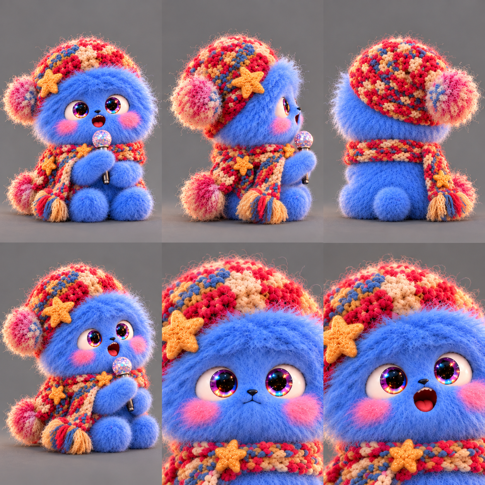
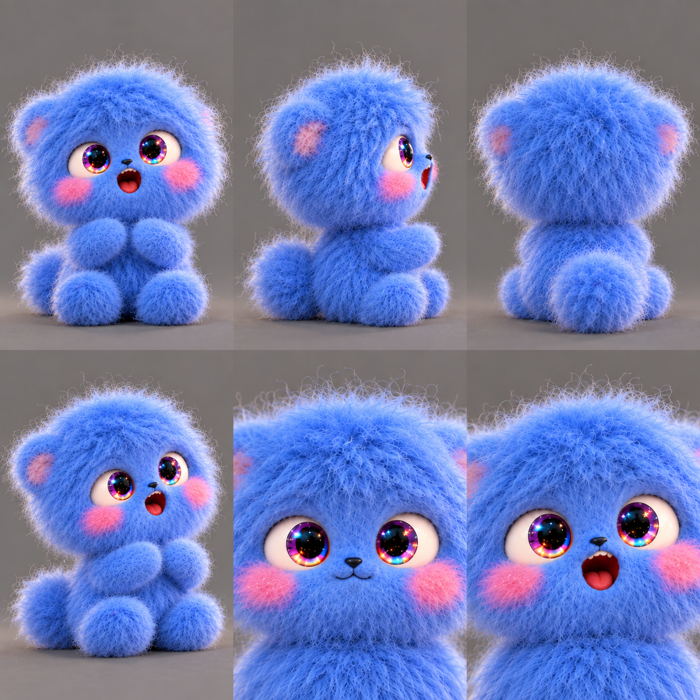
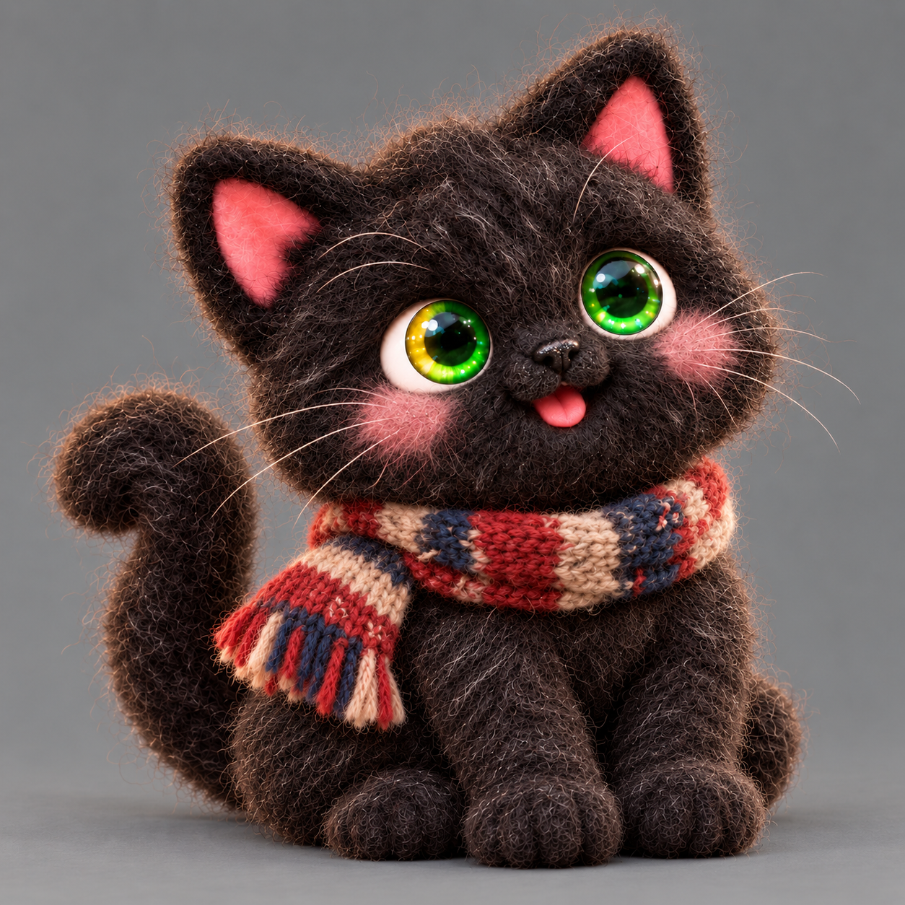
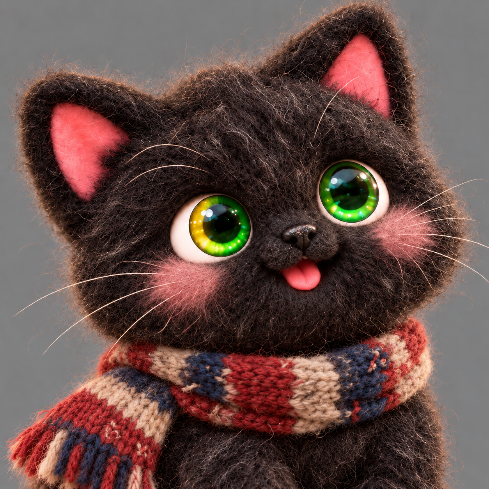
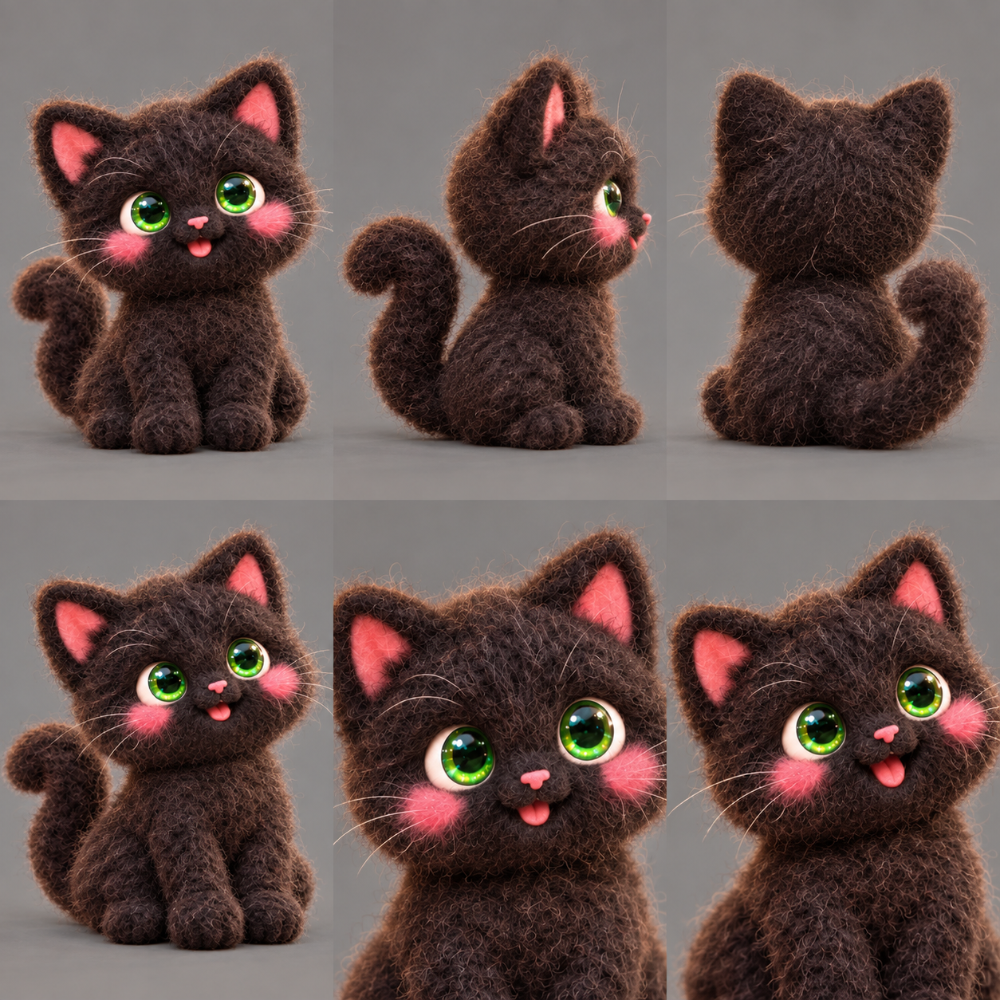
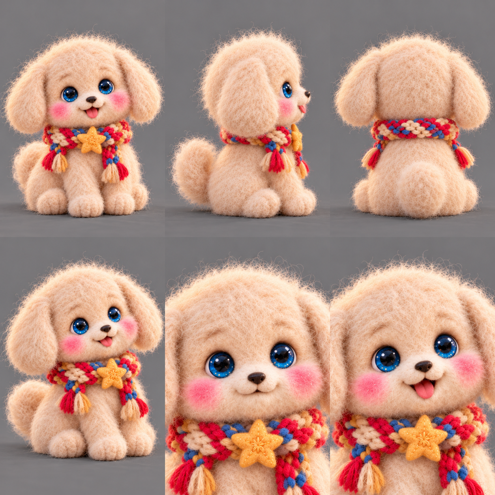
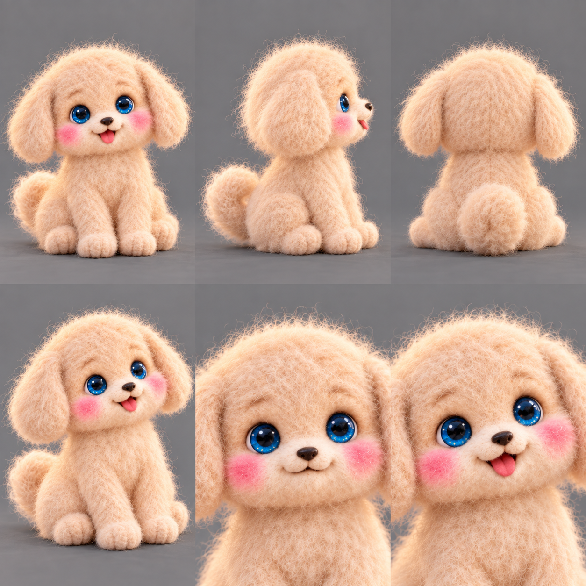
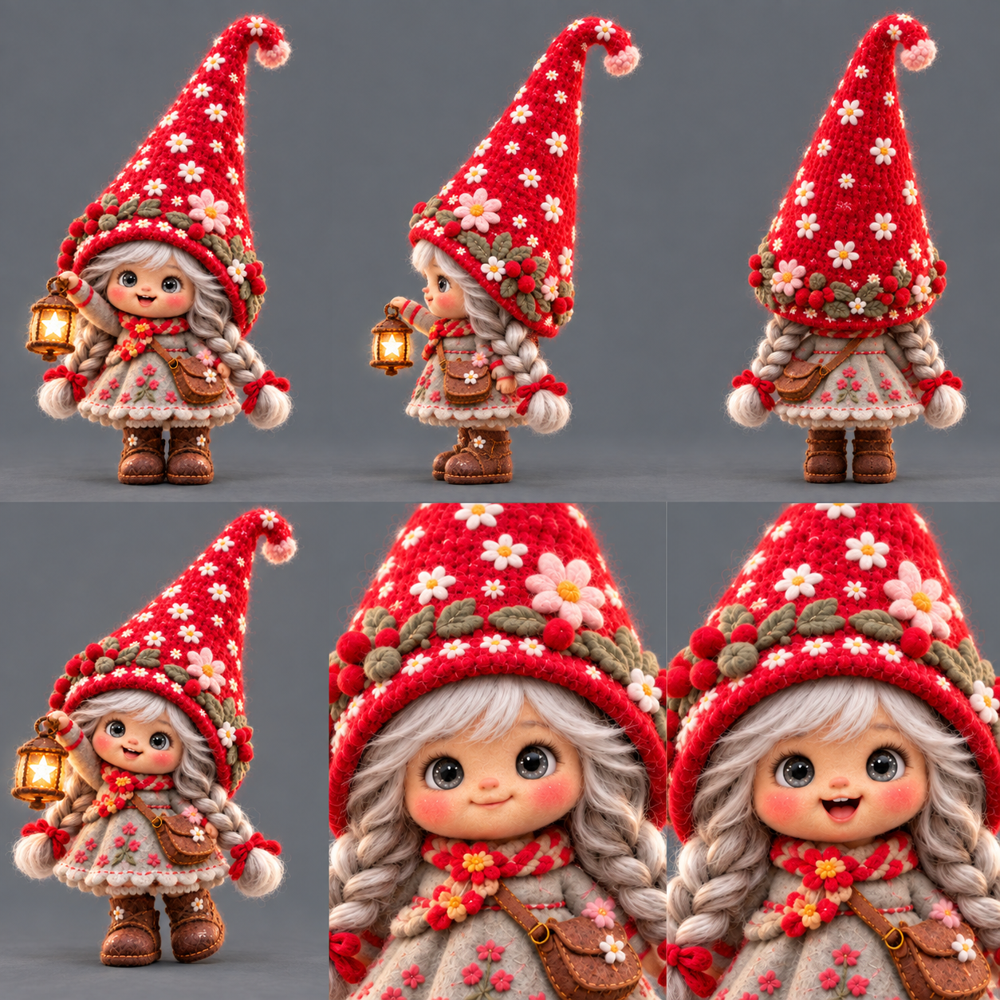

CHARACTER CANON · V7 CAST / KITTY V8 · 2 OCTOBER 2026
Feltworld creature catalogue
Lumi, Kitty, Doggy and Nomie. Grey-background references and transparent cut-outs. Kitty’s latest approved portrait and full-body design take priority over his earlier sheets; his natural-fur update is still pending. Approved matte felt, loose fine wool fibres, fuzzy edges, slightly uneven stitching and handmade irregularity apply to all four friends. Kitty is he/him; Doggy is she/her. The latest eye colours, balayage and tall pointed gnome hat take priority over older images.
Catalogue data · Generation prompts · Earlier shared cut-outs · Current Kitty cut-out · V7 natural-fur cut-outs


Lumi




Identity: Soft cloudlike brushed blue fluff, oversized round head, huge glossy multicoloured starry irises, rosy cheeks, tiny dark nose, stubby pink-padded feet. No tight curls, ringlets, loops, horns, antennae or tail.
Wardrobe: Multicoloured floppy crochet hat with gold star and pompom; braided scarf with gold stars; crystal-topped microphone.
Kitty




Save the approved transparent Kitty cut-out
Identity: He is a near-black felt cat with a little salt-and-pepper wool, softer dusty-rose cheeks, pink ears and tongue, rounded paws and a curled upright tail. His right iris fades gradually from yellow nearest his ear to emerald nearest his nose; the pupil stays dark. The other eye is emerald with holographic glints. His black non-felt nose has fine sanded texture and tiny glitter highlights.
Wardrobe: Soft worn knitted brick-red, navy and off-white hand-me-down scarf. Union Jack colours without a flag pattern. No star or hat.
Earlier natural-fur study

Doggy




Identity: Tiny ivory/cream puppy with soft fluffy fur, soft floppy wool ears, unmistakably BLUE irises, black button nose, short muzzle, rosy cheeks, rounded paws and small fluffy tail.
Wardrobe: Multicoloured braided scarf with prominent gold star. No hat.
Nomie


Identity: Petite fantasy gnome girl, warm honey-beige skin slightly deeper than the original, subtly mixed facial features, rosy cheeks, crystal-faceted GREY irises with restrained silver/white iridescence; never purple. Cool mushroom/ash-brown hair balayaged to platinum/silver in two braids. Only her front fringe magically changes silver, lavender, rose or aqua.
Wardrobe: Comically colossal tall upward-pointed red wool gnome hat with floral appliqués and snowflakes, much bigger than her body; face prominent and unobscured. Floral sage-grey dress/coat, braided scarf, brown satchel and boots; star-window lantern.
Four fringe colours. Her eyes stay grey; her braids retain their balayage.

The tea set and the world
Teacup Cottage and Teapot Manor must look like real, solid glossy glazed pottery. Felt flowers and snow decorate the exposed porcelain. The landscape and world portrait remain tactile wool/felt. Pottery reference · Felt world portrait · Quiet locations and choice outcomes.


For future generations
Attach the matching latest reference every time. Use Kitty’s approved full-body and portrait references for his current design. Use the original composites for relative scene scale and unchanged costume details. Latest explicit user revisions override older colours and hair. Rear views and unseen anatomy remain working interpretations. Each current sheet is at most 2K; preserve its native proportions.
Generated with built-in image_gen. Older sheets remain on disk as historical drafts, with historical references explicitly labelled above.